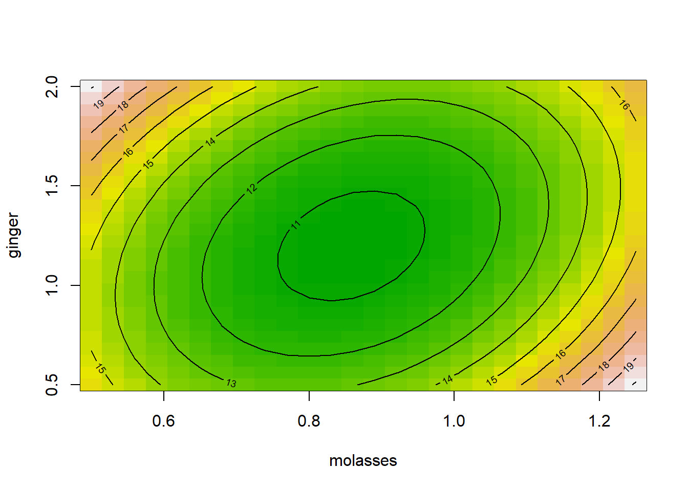
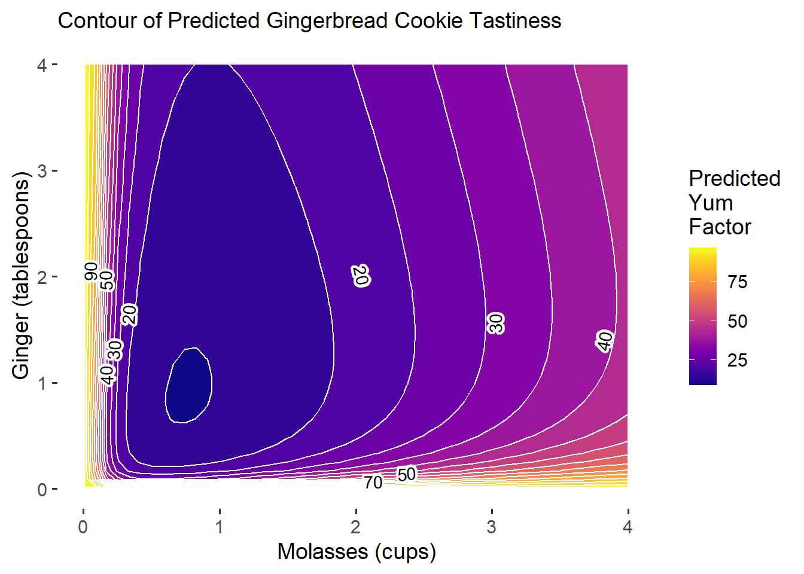
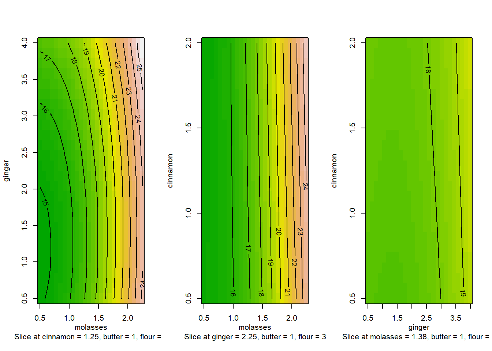
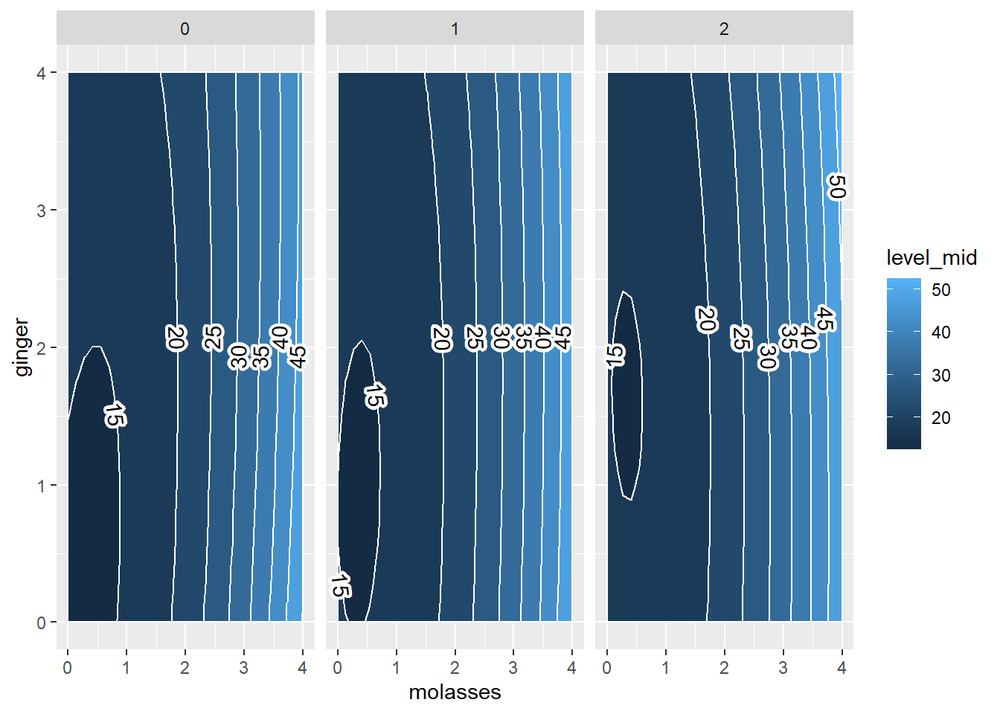
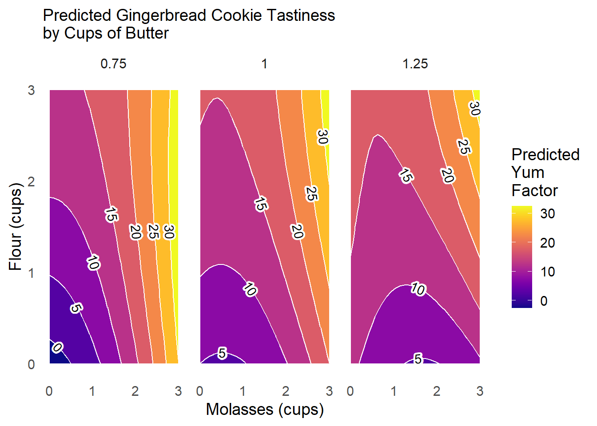
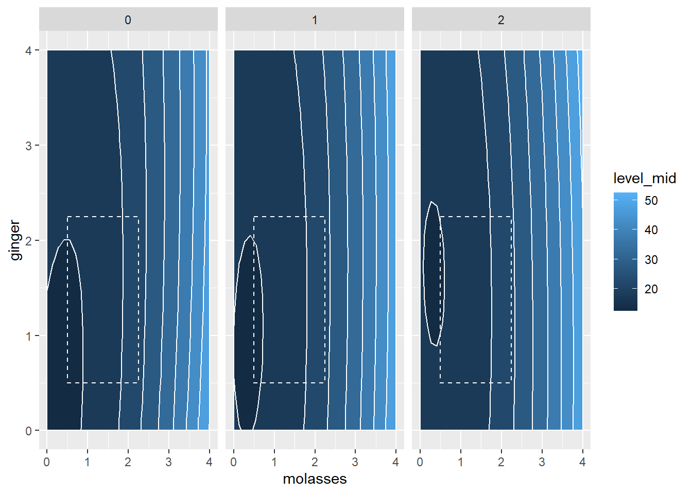

17 Workshop: Response Surface Methodology in R

Figure 16.1: RSM Contour Plots!
Getting Started
Imagine: A team of enterprising Systems Engineering students have decided to start their own baking company, selling gingerbread cookies in the month of December in the greater Ithaca area! None of them are particularly good at baking, but they’re rad good at design of experiments, so they set out to discover the ultimate gingerbread cookie through factorial design and our new tool, response surface methodology! Follow along below to see a surprisingly accurate example of how you can apply RSM to find the optimal design of your product (in this case, gingerbread!)
Packages
# Load packages!
library(tidyverse) # dplyr and ggplot!
library(broom) # glance() and tidy()!
library(viridis) # color palettes!
install.packages(c("rsm", "metR")) # you'll need to install these!
library(rsm) # for RSM
library(metR) # for contour plot labels in ggplot
](images/15_cookies_1.jpg)
(#fig:img_intro)Gingerbread Cookies! Courtesy of Casey Chae @ Unsplash
Our Data
They know from past research that the amount of molasses and ginger in gingerbread cookies are likely significantly related to the overall tastiness (called the yum factor in our dataset). But, they’re not sure how much molasses and how much ginger are needed. Molasses can be somewhat expensive too, compared to other ingredients; so they want to optimize the amount of molasses necessary to produce the best cookies.
So, holding all other conditions in the recipe constant, they ran a factorial experiment, making 16 batches of cookies (about 20 cookies per batch).
In their experiment, they tested 4 different amounts of
molasses, including \(\frac{1}{2}, \ \frac{3}{4}, \ 1,\ \& \ 1 \frac{1}{4}\) cups ofmolasses.They also tested 4 different amounts of
ginger, including \(\frac{1}{2}, \ 1, \ 1 \frac{1}{2}, \ \& \ 2\) tablespoons ofginger.Each batch was randomly assigned one of the 16 unique pairings of amounts of ginger and molasses; there are \(4 \times 4 = 16\) unique ways to assign these ingredients, and they included them all to fully account for all the possibilities.
Then, they randomly handed out cookies to folks on campus in exchange for them briefly ranking the
yumfactor of that cookie on a scale from0(disgusting!) to100(delicious!).
Import Data
They compiled their data in the following dataset. Read it in to help them analyze their data! This dataset includes the following variables:
id: unique ID for each cookie (320 cookies!)batch: unique group ID for each batch of about 20 cookies.
Outcome
yum: numeric scale measuring deliciousness of cookie, from0(disgusting) to100(delicious)
Predictors
molasses: cups ofmolassesin batch:0.75,1,1.25, or1.5cups.ginger: tablespoons ofgingerin batch:0.5,1,1.5, or2tablespoons.
Fixed Conditions
cinnamon: 1 tablespoonbutter: 1 cupflour: 3 cups
# Import our data
cookies = read_csv("workshops/gingerbread_test1.csv")
# Check it out!
cookies %>% glimpse()## Rows: 320
## Columns: 8
## $ id <dbl> 81, 82, 83, 84, 85, 86, 87, 88, 89, 90, 91, 92, 93, 94, 95, 9…
## $ batch <dbl> 5, 5, 5, 5, 5, 5, 5, 5, 5, 5, 5, 5, 5, 5, 5, 5, 5, 5, 5, 5, 4…
## $ yum <dbl> 5, 0, 13, 8, 9, 4, 1, 15, 10, 2, 3, 0, 5, 5, 8, 2, 0, 0, 8, 0…
## $ molasses <dbl> 0.75, 0.75, 0.75, 0.75, 0.75, 0.75, 0.75, 0.75, 0.75, 0.75, 0…
## $ ginger <dbl> 1, 1, 1, 1, 1, 1, 1, 1, 1, 1, 1, 1, 1, 1, 1, 1, 1, 1, 1, 1, 2…
## $ cinnamon <dbl> 1, 1, 1, 1, 1, 1, 1, 1, 1, 1, 1, 1, 1, 1, 1, 1, 1, 1, 1, 1, 1…
## $ butter <dbl> 1, 1, 1, 1, 1, 1, 1, 1, 1, 1, 1, 1, 1, 1, 1, 1, 1, 1, 1, 1, 1…
## $ flour <dbl> 3, 3, 3, 3, 3, 3, 3, 3, 3, 3, 3, 3, 3, 3, 3, 3, 3, 3, 3, 3, 3…
17.1 Models for RSM
In our previous workshop, we learned to calculate the difference of means for any set of groups (in this case, batch of cookies). When we get many different levels in our predictors (eg. not just a treatment and control), we might prefer to use lm() to estimate a linear model of our outcome (yum), rather than computing the difference of means many times.
17.1.1 Specifying an Interaction Model with Polynomials
However, we will see quickly that different specifications of our model may work better than others. We’re going to try three different models that predict yum using cups of molasses and tablespoons of ginger, and we’ll evaluate the \(R^{2}\) of each (% of variation in outcome yum explained by model). These include:
- Basic First-Order Polynomial Model, where:
\[ Yum = \alpha + \beta_{m} X_{m} + \beta_{g} X_{g} \]
\(B_{m}\) is the effect of a 1 cup increase of Molasses.
\(B_{g}\) is the effect of a 1 tablespoon increase of Ginger.
- Interaction Model, where:
\[ Yum = \alpha + \beta_{m} X_{m} + \beta_{g} X_{g} + \beta_{mg} X_{m} X_{g} \]
- \(B_{mg}\) is the interaction effect as
molassesincreases by 1 cup ANDgingerincreases by 1 tablespoon.
m2 = cookies %>%
lm(formula = yum ~ molasses * ginger)
# Also written manually as:
# yum ~ molasses + ginger + I(molasses * ginger)- Second-Order Polynomial Model with Interaction, where:
\[ Yum = \alpha + \beta_{m} X_{m} + \beta_{g} X_{g} + \beta_{mg} X_{m} X_{g} + \beta_{m^{2}} X_{m}^{2} + \beta_{g^{2}} X_{g}^{2} \]
- \(\beta{m^2} X_{m}^{2}\) is the effect as the square of molasses increases by 1.
- Together, \(\beta_{m} X_{m}\) and \(\beta_{m^2} X_{m}^{2}\) act as a polynomial term predicting
yum.
# Add a polynomial by to your existing interactions by using I(variable^2)
m3 = cookies %>%
lm(formula = yum ~ molasses * ginger + I(molasses^2) + I(ginger^2))To review, this model equation can be viewed by just checking m3$coefficients. We can also write it out below; I’ve rounded to 2 decimal places for simplicity below.
\[ \hat{yum} = \hat{Y} = 35.18 + -50.05 X_{m} + 34.15 X_{m}^{2} + -5.06 X_{g} + 4.66 X_{g}^{2} + -7.13 X_{m} X_{g} \]
Let’s evaluate the r.squared of our three models below using the glance() function from the broom package, and bind together those data.frames into one using bind_rows() from dplyr. We see that the polynomial terms dramatically improve the predictive power of our model, jumping from \(R^{2}\) = 0.03 to \(R^{2}\) = 0.14.
## # A tibble: 3 × 12
## r.squared adj.r.squared sigma statistic p.value df logLik AIC BIC
## <dbl> <dbl> <dbl> <dbl> <dbl> <dbl> <dbl> <dbl> <dbl>
## 1 0.00167 -0.00463 7.30 0.265 0.767 2 -1089. 2185. 2200.
## 2 0.0252 0.0159 7.22 2.72 0.0447 3 -1085. 2180. 2198.
## 3 0.137 0.123 6.82 9.97 0.00000000719 5 -1065. 2145. 2171.
## # ℹ 3 more variables: deviance <dbl>, df.residual <int>, nobs <int>Not really amazing quality model fit here - and that does happen! We can tidy() our model m3 to confirm.
The low p.value for many of our predictors tells us that our predictors do tend to have statistically significant relationships with the yum factor of our cookies. (Admittedly, ginger’s direct effect is not very significant - just ~75% confidence). But, it looks like other factors not currently in our model might also impact yum factor.
## # A tibble: 6 × 5
## term estimate std.error statistic p.value
## <chr> <dbl> <dbl> <dbl> <dbl>
## 1 (Intercept) 35.2 5.53 6.36 7.24e-10
## 2 molasses -50.1 11.2 -4.48 1.07e- 5
## 3 ginger -5.06 4.42 -1.15 2.53e- 1
## 4 I(molasses^2) 34.1 6.10 5.60 4.69e- 8
## 5 I(ginger^2) 4.66 1.52 3.06 2.42e- 3
## 6 molasses:ginger -7.13 2.44 -2.92 3.71e- 3
17.1.2 Modeling with rsm()
Finally, we can also write this model using the rsm() function in the rsm package. It works very similarly to lm(), but has some shortcut tricks built it. We’ll use it more later in the workshop. For now, let’s make some rsm model objects to match our lm model terms exactly.
Let’s make a simple ‘First-Order’ polynomial model with FO(). That means just one term per predictor (eg. no \(x^2\), just \(x\)). Our r1 model will match our m1 model.
## (Intercept) FO(molasses, ginger)molasses
## 13.67312 0.79500
## FO(molasses, ginger)ginger
## 0.35250## (Intercept) FO(molasses, ginger)molasses
## TRUE TRUE
## FO(molasses, ginger)ginger
## TRUELet’s make a more complex ‘Second-Order’ polynomial model with SO(). That means just two terms per predictor (eg. \(x\) and \(x^2\)), as well as an interaction effect (called TWI() for two-way interaction).
# Let's make a 'Second-Order' model with SO()
r3 = cookies %>%
rsm(formula = yum ~ SO(molasses, ginger))
# Check it!
r3$coefficients## (Intercept) FO(molasses, ginger)molasses
## 35.17875 -50.05250
## FO(molasses, ginger)ginger TWI(molasses, ginger)
## -5.06325 -7.13200
## PQ(molasses, ginger)molasses^2 PQ(molasses, ginger)ginger^2
## 34.15000 4.66250# These coefficients match our m3$coefficients too.
# FO(...)molasses = molasses
# FO(...)ginger = ginger
# PQ(...)molasses^2 = I(molasses^2)
# PQ(...)ginger^2 = I(ginger^2)
# TWI = molasses:ginger
m3$coefficients## (Intercept) molasses ginger I(molasses^2) I(ginger^2)
## 35.17875 -50.05250 -5.06325 34.15000 4.66250
## molasses:ginger
## -7.13200
17.1.3 Transforming Variables
By default, linear models estimate linear relationships between predictors and outcomes, but many relationship are indeed not linear! Here are 8 ways we might model associations!

Figure 17.1: 8 Common x~y Modeling Strategies
A logit function can sometimes help - that is designed for when a variable ranges between 0 and 1; we could write a classic logit as logit = function(p){ log(p / (1 - p) ) }.
# Write a custom logit function for data from 0 to 100
logit = function(p){ log( p / (1 - p) ) }
# Notice how it ONLY accepts our positive values greater than 0 and less than 1?
c(-1, 0, 0.1, 0.2, 0.5, 1, 2) %>% logit()## [1] NaN -Inf -2.197225 -1.386294 0.000000 Inf NaNLet’s try a few of these strategies for our x and y variables, and see if any of them improve our predictive power (\(R^{2}\)). Spoiler alert: In our data, they don’t but in other datasets, they very well might! Always a good thing to check.
For example, we can try transforming the outcome variable, using a standard linear trend (business as usual), a log transformation, or a square root transformation.
# Linear (normal)
cookies %>%
lm(formula = yum ~ molasses * ginger + I(molasses^2) + I(ginger^2)) %>%
glance()## # A tibble: 1 × 12
## r.squared adj.r.squared sigma statistic p.value df logLik AIC BIC
## <dbl> <dbl> <dbl> <dbl> <dbl> <dbl> <dbl> <dbl> <dbl>
## 1 0.137 0.123 6.82 9.97 0.00000000719 5 -1065. 2145. 2171.
## # ℹ 3 more variables: deviance <dbl>, df.residual <int>, nobs <int># R2 = 0.137
# Logged (add 1 since yum contains 0s)
cookies %>%
lm(formula = log(yum + 1) ~ molasses * ginger + I(molasses^2) + I(ginger^2)) %>%
glance()## # A tibble: 1 × 12
## r.squared adj.r.squared sigma statistic p.value df logLik AIC BIC
## <dbl> <dbl> <dbl> <dbl> <dbl> <dbl> <dbl> <dbl> <dbl>
## 1 0.110 0.0963 0.707 7.80 0.000000616 5 -340. 694. 721.
## # ℹ 3 more variables: deviance <dbl>, df.residual <int>, nobs <int># R2 = 0.11 (Worse)
# Square Root
cookies %>%
lm(formula = sqrt(yum) ~ molasses * ginger + I(molasses^2) + I(ginger^2)) %>%
glance()## # A tibble: 1 × 12
## r.squared adj.r.squared sigma statistic p.value df logLik AIC BIC
## <dbl> <dbl> <dbl> <dbl> <dbl> <dbl> <dbl> <dbl> <dbl>
## 1 0.125 0.111 1.13 9.00 0.0000000522 5 -489. 992. 1018.
## # ℹ 3 more variables: deviance <dbl>, df.residual <int>, nobs <int>Alternatively, we could try transforming the predictor variables, using a log-transformation.
cookies %>%
lm(formula = yum ~ log(molasses) * log(ginger) + I(log(molasses)^2) + I(log(ginger)^2)) %>%
glance()## # A tibble: 1 × 12
## r.squared adj.r.squared sigma statistic p.value df logLik AIC BIC
## <dbl> <dbl> <dbl> <dbl> <dbl> <dbl> <dbl> <dbl> <dbl>
## 1 0.173 0.160 6.67 13.2 1.17e-11 5 -1058. 2131. 2157.
## # ℹ 3 more variables: deviance <dbl>, df.residual <int>, nobs <int>It turns out that few of these transformations really dramatically change the predictive power of the model, so I’ll stick with our original models m3/r3 for the time being.

Figure 17.2: A poorly predicted Gingerbread Cookie Photo by Noelle Otto
Learning Check 1
Question
What happens when you (1) square \(y\), (2) cube \(y\), or (3) take the logit of \((y + 1) / 100\)? Find the r.squared for each of these models.
[View Answer!]
Looks like a linear, business-as-usual modeling strategy for our outcome variable \(y\) (yum) is best for this data.
# Logit
cookies %>%
lm(formula = log( (yum + 1)/100 / (1 - (yum + 1)/100) ) ~ molasses * ginger + I(molasses^2) + I(ginger^2)) %>%
glance()## # A tibble: 1 × 12
## r.squared adj.r.squared sigma statistic p.value df logLik AIC BIC
## <dbl> <dbl> <dbl> <dbl> <dbl> <dbl> <dbl> <dbl> <dbl>
## 1 0.115 0.101 0.779 8.19 0.000000274 5 -371. 756. 782.
## # ℹ 3 more variables: deviance <dbl>, df.residual <int>, nobs <int># R2 = 0.115 (Worse)
# Squared
cookies %>%
lm(formula = I(yum^2) ~ molasses * ginger + I(molasses^2) + I(ginger^2)) %>%
glance()## # A tibble: 1 × 12
## r.squared adj.r.squared sigma statistic p.value df logLik AIC BIC
## <dbl> <dbl> <dbl> <dbl> <dbl> <dbl> <dbl> <dbl> <dbl>
## 1 0.119 0.105 208. 8.46 0.000000158 5 -2160. 4333. 4360.
## # ℹ 3 more variables: deviance <dbl>, df.residual <int>, nobs <int># R2 = 0.118 (Worse)
# Cubed
cookies %>%
lm(formula = I(yum^3) ~ molasses * ginger + I(molasses^2) + I(ginger^2)) %>%
glance()## # A tibble: 1 × 12
## r.squared adj.r.squared sigma statistic p.value df logLik AIC BIC
## <dbl> <dbl> <dbl> <dbl> <dbl> <dbl> <dbl> <dbl> <dbl>
## 1 0.0913 0.0769 6147. 6.31 0.0000134 5 -3243. 6499. 6526.
## # ℹ 3 more variables: deviance <dbl>, df.residual <int>, nobs <int>
17.2 Contour Plots
So now that we have this model, what do we do with it? Response Surface Methodology refers to using statistical models to predict an outcome (a.k.a. response variable) given a series of varying conditions. This lets us predict and visualize the full range/surface for that outcome.
17.2.1 Simple contour() plots
The easiest way to think of this is in 3-dimensions, meaning 3 variables (1 outcome and 2 predictors). A regression model traditionally finds us the plane of best fit when looking at 3 dimensions, or the hyperplane of best fit when looking at +4 dimensions. However, when we use polynomial terms in our model equation, we can map that plane almost perfectly to our observed data, creating more of a contour or topographical surface than a simple plane.
We can use our model object m3 or r3 from above to generate a contour plot, predicting the yum factor (shown by color and lines) while we varying ~molasses + ginger levels. We can add a heatmap by saying image = TRUE. Our model predicts that middling levels of ginger and molasses produce a kind of sad coldspot where the yum factor is about 11 (middle), but our model projects the yum factor will increase when you increase ginger and/or molasses from that center amount.

That’s beautiful - but a little unclear how it was produced! How could we make that plot ourselves in ggplot?
17.2.2 geom_tile() plots
However, we’ve learned this term that ggplot can give us greater flexibility when designing and communicating information, so how would we make this in ggplot?
It’s really quick! We need to (1) make a grid of predictor values with expand_grid() to feed to predict(), (2) extract the predicted yum values (usually called yhat), and (3) then pipe the result to ggplot!
## [1] 0.50 1.25## [1] 0.5 2.0Step 1: We’ll use expand_grid() to build a grid of molasses and ginger values, called myx, where molasses spans its observed range and ginger spans its own observed range.
# Make the grid of conditions!
myx = expand_grid(
molasses = seq(from = min(cookies$molasses), to = max(cookies$molasses), length.out = 50),
ginger = seq(from = min(cookies$ginger), to = max(cookies$ginger), length.out = 50)
)
# Optionally, you could pick some arbitrary ranges, like 0 to 5
#myx = expand_grid(
# molasses = seq(from = 0, to = 5, length.out = 50),
# ginger = seq(from = 0, to = 3, length.out = 50)
#)
# Check it out!
myx %>% glimpse()## Rows: 2,500
## Columns: 2
## $ molasses <dbl> 0.5, 0.5, 0.5, 0.5, 0.5, 0.5, 0.5, 0.5, 0.5, 0.5, 0.5, 0.5, 0…
## $ ginger <dbl> 0.5000000, 0.5306122, 0.5612245, 0.5918367, 0.6224490, 0.6530…Note: You have to pick these values!! (eg. 0 to 5, 0 to 3, etc.) contour() uses the min and max of molasses and ginger each, but often, we want to make predictions slightly beyond our observed data. Just remember, a grid of 20 by 20 items produces 400 cells; 100 by 100 produces 10,000 cells; etc. Once you get above a few 1000, ggplot starts to slow down quickly.
Step 2: Next, we’ll mutate() our myx data.frame to add a column yhat. In that column, we predict() the yum factor for those conditions based on our model m3 (or r3 - either work). As shown in previous workshops, we must give predict() a data.frame containing hypothetical values of each predictor in our model, called newdata. We’ll save the result in a data.frame called mypred.
# Make predictions!
mypred = myx %>%
mutate(yhat = predict(m3, newdata = tibble(molasses, ginger)))
# Check it out!
mypred %>% glimpse()## Rows: 2,500
## Columns: 3
## $ molasses <dbl> 0.5, 0.5, 0.5, 0.5, 0.5, 0.5, 0.5, 0.5, 0.5, 0.5, 0.5, 0.5, 0…
## $ ginger <dbl> 0.5000000, 0.5306122, 0.5612245, 0.5918367, 0.6224490, 0.6530…
## $ yhat <dbl> 15.54100, 15.42394, 15.31561, 15.21603, 15.12518, 15.04308, 1…Step 3: Finally, we’ll visualize it using geom_tile(), which maps a fill (yhat) to every x (molasses) and y (ginger) coordinate.
# Voila!
g1 = ggplot() +
geom_tile(data = mypred, mapping = aes(x = molasses, y = ginger, fill = yhat)) +
scale_fill_viridis(option = "plasma")
# View it!
g1This matches the same pattern from our contour() plot, and was pretty painless!
17.2.3 Pretty geom_contour() plots!
But can we make this prettier and clearer for our reader? ggplot includes a geom_contour() function that will plot the contour outlines on top. A few requirements:
In the
aes(),geom_contour()requires you to makex,y,andzaesthetics, wherezis the predicted valueyhat.You can set the number of
bins(eg.bins = 10intervals) OR thebinwidth(eg.binwidth = 10, where each interval is 10 units ofyhatwide). [Just like withcut_interval()!]
# Using bins....
# Add contour lines, where each line is 1 unit apart on the `yum` factor scale!
g1 +
geom_contour(data = mypred, mapping = aes(x = molasses, y = ginger, z = yhat),
color = "white", bins = 10)# Using binwidth...
# Add contour lines, where each line is 1 unit apart on the `yum` factor scale!
g1 +
geom_contour(data = mypred, mapping = aes(x = molasses, y = ginger, z = yhat),
color = "white", binwidth = 1)Alternatively, we could do this all in one fell swoop, using geom_contour_fill(), which combines geom_tile() and geom_contour() together. (Note: geom_contour_filled() is a different function. You want _fill(), not _filled().)
g2 = ggplot() +
# Make a filled contour plot, with a binwidth of 1
geom_contour_fill(data = mypred, mapping = aes(x = molasses, y = ginger, z = yhat),
binwidth = 1, color = "white") +
scale_fill_viridis(option = "plasma")
# View it!
g2
Finally, some coding wizards out there developed some ggplot add-on functions in the metR package that will let us add nice labels to our contour plots, using geom_label_contour().
We supply it the same information as
geom_contour_filled(), includingx,y, andzvectorsOptional: Tell it to
skip = 0lines, labeling every contour line.Optional: Tell it to add a white border around our text with
stroke.color = "white", where that border isstroke = 0.2points wide.Optional: If you add
label.placer = label_placer_n(1), it will label each contour linen = 1time.All other rules of ggplot apply, eg.
size, textcolor, andalphatransparency.
Note: you must have loaded the metR package for this to work.
g2 +
geom_text_contour(data = mypred, mapping = aes(x = molasses, y= ginger, z = yhat),
skip = 0, stroke.color = "white", stroke = 0.2, label.placer = label_placer_n(1))Beautiful!
17.2.4 One-step RSM in ggplot
Finally, let’s practice doing this all in one code chunk in ggplot.
# Make our predictors... - this time let's expand the range
mypred2 = expand_grid(
molasses = seq(from = 0, to = 4, length.out = 50),
ginger = seq(0, to = 4, length.out = 50)
) %>%
mutate(yhat = predict(m3, newdata = tibble(molasses, ginger)))
mypred2 %>%
# Set aesthetics
ggplot(mapping = aes(x = molasses, y = ginger, z = yhat)) +
# Make a filled contour with 15 bins
geom_contour_fill(bins = 15, color = "white") +
# Add labels
geom_text_contour(skip = 0, stroke.color = "white", stroke = 0.2, label.placer = label_placer_n(1)) +
# Add a beautiful plasma viridis palette
scale_fill_viridis(option = "plasma") +
# Add theming and labels
theme_classic(base_size = 14) +
theme(axis.line = element_blank()) + # get rid of axis line
labs(x = "Molasses (cups)", y = "Ginger (tablespoons)", fill = "Predicted\nYum\nFactor",
subtitle = "Contour of Predicted Gingerbread Cookie Tastiness")
Excellent! Our plot can serve as a visual diagnostic. Tentatively, our model results suggest that increasing molasses may lead to considerable gains in our outcome, with ginger contributing some impact early on. Notably, we see that though our actual outcome’s measurement ranged from 0 to 100, our predictions might exceed those limits.
17.2.5 More Realistic Plots
Even though transformations don’t improve our predictive accuracy, they might make our predictions more realistic. Let’s try a few transformations.
A
logit()transformation could help with boundingyumto 0 and 1, if we scale down yum from 0-100 to 0-1. We’ll have to add+1to theyumscale though, because some cookies got a score of zero, which can be logit-transformed.A
log()transformation tomolassesandgingercould help with bounding these conditions to only positive values, since we know we need at least a little of each, and we can’t have ‘negative ginger.’
# Write a quick adjusted logit function
adj_logit = function(p){
p = (p + 1) / 100 # adjust p from 0 - 100 to 0 - 1
log(p / (1 - p)) # logit transformation
}
# Transform outcome and predictors
m4 = cookies %>%
lm(formula = adj_logit(yum) ~ log(molasses) * log(ginger) + I(log(molasses)^2) + I(log(ginger)^2))
# Get conditions and predictions
mypred3 = expand_grid(
molasses = seq(from = 0.01, to = 4, length.out = 50),
ginger = seq(0.01, to = 4, length.out = 50)
) %>%
mutate(yhat = predict(m4, newdata = tibble(molasses, ginger)),
# Undo the logit transformation!
yhat = exp(yhat) / (1 + exp(yhat)),
# Undo the (y + 1) / 100 transformation
yhat = 100*yhat - 1)
# Visualize it!
g3 = mypred3 %>%
ggplot(mapping = aes(x = molasses, y = ginger, z = yhat)) +
geom_contour_fill(bins = 15, color = "white") +
geom_text_contour(skip = 0, stroke.color = "white", stroke = 0.2,
# Label each contour twice, but check_overlap deletes labels that overlap!
label.placer = label_placer_n(2), check_overlap = TRUE) +
scale_fill_viridis(option = "plasma") +
theme_classic(base_size = 14) +
theme(axis.line = element_blank()) + # get rid of axis line
labs(x = "Molasses (cups)", y = "Ginger (tablespoons)", fill = "Predicted\nYum\nFactor",
subtitle = "Contour of Predicted Gingerbread Cookie Tastiness")
g3 Ta-da! Now we have much more reasonable predictions, even though we lost 2% predictive power. It’s always a trade-off between predictive power and our ability to generate reasonable, useful quantities of interest. Ideally, let’s get a much better \(R^{2}\)!
Learning Check 2
Suppose we expanded our factorial experiment based on this contour plot, adding more permutations of molasses and ginger, such that we now have 1280 cookies under test! We’ve saved this data in workshops/gingerbread_test2.csv.
Question
Generate a second-order polynomial model like m3 and visualize the contour plot in ggplot. How do our predictions change?
[View Answer!]
## [1] 0.5 2.0## [1] 0.50 1.25# Write a quick adjusted logit function
adj_logit = function(p){
p = (p + 1) / 100 # adjust p from 0 - 100 to 0 - 1
log(p / (1 - p)) # logit transformation
}
# Transform outcome and predictors
m_lc = cookies2 %>%
lm(formula = adj_logit(yum) ~ log(molasses) * log(ginger) + I(log(molasses)^2) + I(log(ginger)^2))
# Check the R2 (still terrible! whoops!)
m_lc %>% glance()## # A tibble: 1 × 12
## r.squared adj.r.squared sigma statistic p.value df logLik AIC BIC
## <dbl> <dbl> <dbl> <dbl> <dbl> <dbl> <dbl> <dbl> <dbl>
## 1 0.140 0.136 0.619 41.3 1.75e-39 5 -1199. 2411. 2447.
## # ℹ 3 more variables: deviance <dbl>, df.residual <int>, nobs <int># Get conditions and predictions
mypred_lc = expand_grid(
molasses = seq(from = 0.01, to = 4, length.out = 50),
ginger = seq(0.01, to = 4, length.out = 50)
) %>%
mutate(yhat = predict(m_lc, newdata = tibble(molasses, ginger)),
# Undo the logit transformation!
yhat = exp(yhat) / (1 + exp(yhat)),
# Undo the (y + 1) / 100 transformation
yhat = 100*yhat - 1)
# Visualize it!
g_lc = mypred_lc %>%
ggplot(mapping = aes(x = molasses, y = ginger, z = yhat)) +
geom_contour_fill(bins = 15, color = "white") +
geom_text_contour(skip = 0, stroke.color = "white", stroke = 0.2,
# Label each contour twice, but check_overlap deletes labels that overlap!
label.placer = label_placer_n(2), check_overlap = TRUE)
# Add good colors and theming!
g_lc +
scale_fill_viridis(option = "plasma") +
theme_classic(base_size = 14) +
theme(axis.line = element_blank()) + # get rid of axis line
labs(x = "Molasses (cups)", y = "Ginger (tablespoons)", fill = "Predicted\nYum\nFactor",
subtitle = "Contour of Predicted Gingerbread Cookie Tastiness")
Our predictive power is still not quite that good. Ironically, our model (based on fake data) suggests that the best gingerbread cookies you can make should either have very little molasses OR lots of molasses and ginger, but the payoff for using very little molasses will be higher!
This plot demonstrates how even though your original model m4 predicted really high payoff for adding more molasses, when we compare those predictions to updated model predictions based on new experiments, we might find that the new empirical data tempers our earlier predictions.
This is good news. This probably means that our earlier predictions were not very accurate, and our extra experiments paid off by helping clarify. New results can be suprising, but are never a bad thing - because they get you closer to truth.
17.3 Iterate!
Suppose now that we expanded our factorial experiment to vary the amount of flour, butter, and cinnamon too! We’ve saved this data in workshops/gingerbread_test3.csv. How would we model this data?
## Rows: 46,080
## Columns: 8
## $ id <dbl> 1, 2, 3, 4, 5, 6, 7, 8, 9, 10, 11, 12, 13, 14, 15, 16, 17, 18…
## $ batch <dbl> 1, 1, 1, 1, 1, 1, 1, 1, 1, 1, 1, 1, 1, 1, 1, 1, 1, 1, 1, 1, 2…
## $ yum <dbl> 0, 4, 9, 10, 4, 8, 7, 3, 1, 12, 0, 4, 6, 10, 0, 0, 10, 5, 1, …
## $ molasses <dbl> 0.75, 0.75, 0.75, 0.75, 0.75, 0.75, 0.75, 0.75, 0.75, 0.75, 0…
## $ ginger <dbl> 1, 1, 1, 1, 1, 1, 1, 1, 1, 1, 1, 1, 1, 1, 1, 1, 1, 1, 1, 1, 1…
## $ cinnamon <dbl> 1, 1, 1, 1, 1, 1, 1, 1, 1, 1, 1, 1, 1, 1, 1, 1, 1, 1, 1, 1, 1…
## $ butter <dbl> 0.75, 0.75, 0.75, 0.75, 0.75, 0.75, 0.75, 0.75, 0.75, 0.75, 0…
## $ flour <dbl> 2.75, 2.75, 2.75, 2.75, 2.75, 2.75, 2.75, 2.75, 2.75, 2.75, 2…17.3.1 Modeling many Interactions
We can make a second-order polynomial for these 5 variables with lm() or rsm(), like so:
# model using rsm()
r5 = cookies3 %>%
rsm(formula = yum ~ SO(molasses, ginger, cinnamon, butter, flour))
# model using lm()
m5 = cookies3 %>%
lm(formula = yum ~ molasses * ginger * cinnamon * butter * flour +
I(molasses^2) + I(ginger^2) + I(cinnamon^2) + I(butter^2) + I(flour^2))## (Intercept) molasses
## 6.628 11.816
## ginger cinnamon
## 10.739 -60.324
## butter flour
## -1.272 0.078
## I(molasses^2) I(ginger^2)
## 2.585 0.302
## I(cinnamon^2) I(butter^2)
## -0.034 -4.601
## I(flour^2) molasses:ginger
## -0.868 -11.493
## molasses:cinnamon ginger:cinnamon
## 32.053 5.694
## molasses:butter ginger:butter
## -9.758 -5.691
## cinnamon:butter molasses:flour
## 65.636 -1.146
## ginger:flour cinnamon:flour
## -2.347 21.764
## butter:flour molasses:ginger:cinnamon
## 7.047 -2.030
## molasses:ginger:butter molasses:cinnamon:butter
## 6.798 -36.209
## ginger:cinnamon:butter molasses:ginger:flour
## -11.122 2.366
## molasses:cinnamon:flour ginger:cinnamon:flour
## -12.649 -2.576
## molasses:butter:flour ginger:butter:flour
## 0.025 0.667
## cinnamon:butter:flour molasses:ginger:cinnamon:butter
## -23.226 5.925
## molasses:ginger:cinnamon:flour molasses:ginger:butter:flour
## 1.566 -0.987
## molasses:cinnamon:butter:flour ginger:cinnamon:butter:flour
## 13.912 4.207
## molasses:ginger:cinnamon:butter:flour
## -2.742## # A tibble: 1 × 12
## r.squared adj.r.squared sigma statistic p.value df logLik AIC BIC
## <dbl> <dbl> <dbl> <dbl> <dbl> <dbl> <dbl> <dbl> <dbl>
## 1 0.168 0.167 7.06 258. 0 36 -155424. 310924. 311256.
## # ℹ 3 more variables: deviance <dbl>, df.residual <int>, nobs <int># Check which variables are significant
# (if some were not, we might cut them if we wanted to make as parsimonious a model as possible)
m5 %>%
tidy() %>%
filter(p.value < 0.05)## # A tibble: 10 × 5
## term estimate std.error statistic p.value
## <chr> <dbl> <dbl> <dbl> <dbl>
## 1 cinnamon -60.3 24.8 -2.43 1.51e- 2
## 2 I(molasses^2) 2.58 0.115 22.5 1.35e-111
## 3 I(ginger^2) 0.302 0.0287 10.5 6.74e- 26
## 4 I(butter^2) -4.60 1.12 -4.12 3.77e- 5
## 5 cinnamon:butter 65.6 24.3 2.70 6.99e- 3
## 6 cinnamon:flour 21.8 8.26 2.64 8.41e- 3
## 7 molasses:cinnamon:butter -36.2 16.3 -2.22 2.66e- 2
## 8 molasses:cinnamon:flour -12.6 5.54 -2.28 2.25e- 2
## 9 cinnamon:butter:flour -23.2 8.09 -2.87 4.10e- 3
## 10 molasses:cinnamon:butter:flour 13.9 5.43 2.56 1.04e- 2
17.3.2 Contours with Multiple Variables
Now, whenever we analyze contours, since we have more than 2 predictors, we need multiple plots.
For example, let’s examine variation in yum as 3 predictions change simultaneously. These include molasses, ginger, and cinnamon. We can just write in contour() the formula ~molasses + ginger + cinnamon. It will place molasses and ginger on the x and y axes, because they came first, and then report the values of cinnamon, butter, and flour for each panel. However, the mechanics of contour() can be tricky, and its tough to compare plots like these, since they are switching the x and y axis in every plot! But what if we could make our own in ggplot?
# We can split it into 1 row and 3 columns using par(mfrow = c(1, 3))
par(mfrow = c(1,3))
# And plot the contous like so
contour(m5, ~molasses + ginger + cinnamon, image = TRUE)
17.3.3 ggplot contour plots!
This is the power of ggplot - since you have to work with the data yourself, you actually know what your plots mean and can design the plots most useful to your team.
For example, I would love to see 2 panels showing the contours of molasses x ginger when cinnamon = 0, cinnamon = 1, and cinnamon = 2 tablespoons. All other conditions would be held constant, allowing us to see how the contour changes shape. If we hold constant the other values though, we should hold them at meaningful values, like the average or perhaps a value you know to be sufficient.
## [1] 0.5 2.0## [1] 1# Get a grid...
mygrid = expand_grid(
molasses = seq(from = 0, to = 4, length.out = 30),
ginger = seq(from = 0, to = 4, length.out = 30),
# Now repeat that grid for each of these values of cinnamon!
cinnamon = c(0, 1, 2),
# Hold other constant at meaningful values
flour = cookies3$flour %>% mean(),
butter = cookies3$butter %>% mean()) %>%
# Then predict your outcome!
mutate(yhat = predict(m5, newdata = tibble(molasses, ginger, cinnamon, flour, butter)))Next, let’s use our grid to visualize the contours in ggplot!
# Let's check it out!
g4 = mygrid %>%
# Map aesthetics
ggplot(mapping = aes(x = molasses, y = ginger, z = yhat)) +
# SPLIT INTO PANELS by amount of cinnamon!
facet_wrap(~cinnamon) +
geom_contour_fill(binwidth = 5, color = "white") +
geom_text_contour(skip = 0, stroke.color = "white", stroke = 0.2,
label.placer = label_placer_n(1), check_overlap = TRUE)
# View it!
g4
Finally, let’s improve the labels, colors, and theming for this plot.
g5 = g4 +
theme_classic(base_size = 14) +
theme(axis.line = element_blank(), # clean up the lines
axis.ticks = element_blank(), # clean up the ticks
strip.background = element_blank()) + # clean up the facet labels
scale_fill_viridis(option = "plasma") +
labs(x = "Molasses (cups)", y = "Ginger (tablespoons)", fill = "Predicted\nYum\nFactor",
subtitle = "Predicted Gingerbread Cookie Tastiness\nby Tablespoons of Cinnamon")
# view it!
g5What can we learn from this plot?
When we add more
cinnamon(2tbsp; right), the zone in which cookies are truly bad (<15 points ofyum) shrinks greatly (compared toleftandcenterpanels).Otherwise,
cinnamonhas fairly minimal interaction effects withgingerandmolassesonyumscores.
Learning Check 3
Suppose we want to examine other interactions! Design your own ggplot to test how butter shapes the yum factor as molasses and flour vary.
Question
Put molasses on the x-axis from 0 to 4 cups, flour on the y-axis from 0 to 4 cups, and vary the level of butter across panels from 0.75 to 1 to 1.25 cups. Hold other conditions at their mean values.
[View Answer!]
# Make the grid!s
mygrid_lc3 = expand_grid(
# Vary molasses and flour...
molasses = seq(from = 0, to = 3, length.out = 30),
flour = seq(from = 0, to = 3, length.out = 30),
# Now repeat that grid for each of these values of butter!
butter = c(0.75, 1, 1.25),
# Hold other constant at meaningful values
ginger = cookies3$ginger %>% mean(),
cinnamon = cookies3$cinnamon %>% mean()) %>%
# Then predict your outcome!
mutate(yhat = predict(m5, newdata = tibble(molasses, ginger, cinnamon, flour, butter)))
# Visualize!
mygrid_lc3 %>%
ggplot(mapping = aes(x = molasses, y = flour, z = yhat)) +
# SPLIT INTO PANELS by amount of butter!
facet_wrap(~butter) +
geom_contour_fill(binwidth = 5, color = "white") +
geom_text_contour(skip = 0, stroke.color = "white", stroke = 0.2,
label.placer = label_placer_n(1), check_overlap = TRUE) +
# Add theming!
scale_fill_viridis(option = "plasma") +
theme_classic(base_size = 14) +
theme(axis.line = element_blank(), # clean up the lines
axis.ticks = element_blank(), # clean up the ticks
strip.background = element_blank()) +
labs(x = "Molasses (cups)", y = 'Flour (cups)',
fill = "Predicted\nYum\nFactor",
subtitle = "Predicted Gingerbread Cookie Tastiness\nby Cups of Butter")
This plot tells us that adding more butter to the cookies tends to reduce the amount of the contour with low yum scores, and increases the relative share of the the response surface with scores of 15 or 20.
17.4 Quantities of Interest in RSM
Finally, we might be interested in calculating (and annotating our charts) with some key quantities of interest! Let’s use our model m5 from earlier and its rsm counterpart r5.
17.4.1 Percent Change in Bins
First, when comparing change across panels, we’re essentially comparing change in area. So we can use our grid of conditions and predictions mygrid to calculate those percentages!
area = mygrid %>%
# Cut the outcome into bins, 5 units wide on the yum scale
mutate(bin = cut_interval(yhat, length = 5)) %>%
# For each panel and bin, count up the predictions in that interval
group_by(cinnamon, bin) %>%
summarize(count = n()) %>%
ungroup() %>%
# Now, for each panel, calculate the percentage of predictions in that panel located in each bin
group_by(cinnamon) %>%
mutate(percent = count / sum(count),
percent = round(percent*100, 2))
# Zoom into the lowest bin.
# What percentage of the area was in that bin given each level of cinnamon?
qi1 = area %>%
filter(bin == "[10,15]")
qi1## # A tibble: 3 × 4
## # Groups: cinnamon [3]
## cinnamon bin count percent
## <dbl> <fct> <int> <dbl>
## 1 0 [10,15] 92 10.2
## 2 1 [10,15] 66 7.33
## 3 2 [10,15] 36 4We computed that the area predicted to score lowest on the yum scale (10-15) decreased from 10.22 given 0 tablespoons of cinnamon to 7.33 given 1 tablespoon and then to 4 given 2 tablespoons of cinnamon.
17.4.2 Study Range
We might want our reader to know what is the area that we actually had data on, versus what was the area we were generating predictions from. For this, we can just draw a box from our raw data, using summarize() and geom_rect(). geom_rect() requires an xmin, xmax, ymin, and ymax. For example, since molasses is our x variable and ginger has been our y variable in our ggplot analyses, we can do the following:
box = cookies3 %>%
summarize(xmin = min(molasses), xmax = max(molasses),
ymin = min(ginger), ymax = max(molasses))
# For example, we can start a new ggplot
ggplot() +
# Mapping the contour fill
geom_contour_fill(data = mygrid, mapping = aes(x = molasses, y = ginger, z = yhat), color = 'white') +
facet_wrap(~cinnamon) +
# And then plotting a box overtop, with no fill
geom_rect(data = box, mapping = aes(xmin = xmin, xmax = xmax, ymin = ymin, ymax = ymax),
color = "white", linetype = 'dashed', fill = NA)
17.5 Extra Concepts of Interest: Canonical Form
The canonical form is an abbreviation of your long model equation into a much more understandable, short form. rsm will calculate the canonical form of your model equation for you, using canonical(). For example, if you have 2 predictors \(X_{1}\) and \(X_{2}\), the canonical form would look like:
\[ \hat{Y} = Y_{s} + X_{1}^{2} + X_{2}^{2}\]
- where \(Y_{s}\) is the value of \(\hat{Y}\) at the ‘stationary point’, when \(X_{1}\) and \(X_{2}\) equal 0.
The tricky thing is that the canonical form is not actually in units of our original predictors, say, cups of molasses and tablespoons of ginger. Instead, the canonical form is like a standardized format that maps every value of cups of molasses (written \(x_{1}\)) to a new value \(X_{1}\), which is a certain distance away from the stationary point.
Why would we have a system like this? It’s because certain shapes of contour plots can be recognized from their canonical form alone, with no other detail, so the canonical form can be useful for us. It’s a little more than we can go into at this moment, but suffice it to say that the canonical form of a model is like a shortcut for interpreting the shape of a contour plot.
17.5.1 Finding the Canonical Form
We can run the calculations for obtaining the canonical form using canonical() in rsm.
Inside this object are several great quantities of interest.
17.5.3 Stationary Points
## molasses ginger cinnamon butter flour
## 0.5267221 -0.1922253 -0.5966090 1.3474297 3.289570417.5.4 Shift Points
# These values can help you convert from x_1 (normal units) to X_1 (canonical form)
canon$eigen$vectors## [,1] [,2] [,3] [,4] [,5]
## molasses 0.99458167 -0.01095125 0.09352416 -0.004894275 -0.04377947
## ginger -0.01596009 -0.99629842 0.02526971 -0.061114741 -0.05254671
## cinnamon 0.08987515 -0.01363529 -0.97819754 -0.185204008 -0.02378214
## butter -0.03957109 0.03864526 -0.02037369 0.210855287 -0.97573851
## flour 0.03015222 -0.07476727 -0.18256277 0.957852054 0.20661795In general, I find that the contour plots themselves tend to be the most effective tools for decision-making in most cases, but advanced applications can make great use of the canonical forms to identify key points after which increasing the amount of an ingredient will make no more difference.